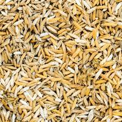
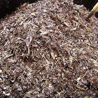

| Nombre del Producto | Referencia del Producto | Descripción | Precio |
|---|---|---|---|
| Cascarilla de Arroz |  | Cascarilla de arroz para los substratos y abonos organicos, 1kg | $1 |
| Abono Orgánico |  | Abono orgánico, mezclado, 1 kg | $1.50 |
| Tierra Negra | |
La tierra negra para cultivo, abonos y substratos, 1kg | $1 |
| Turba | |
La turba, componente de algunos substratos organicos, 1kg | $3 |